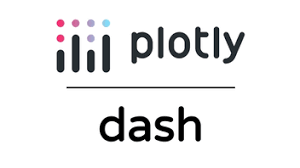
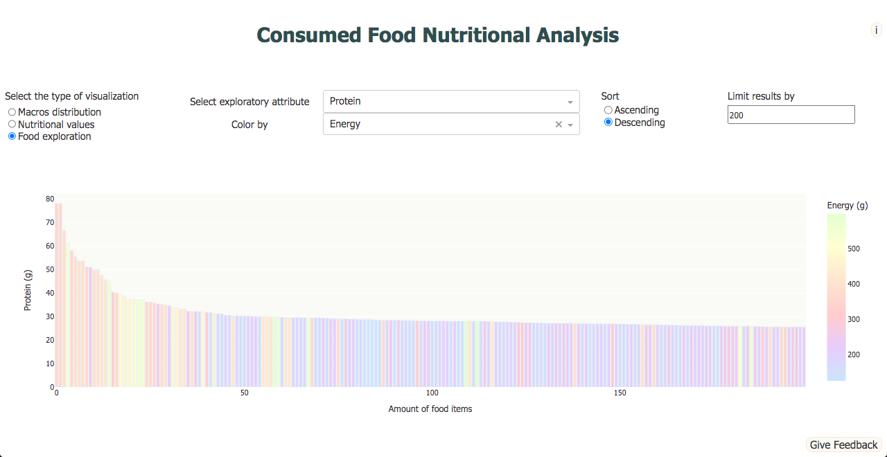

 Nutritional Explorer Dashboard
In the midst of learning Data Science and Machine Learning, something kept vexing me. The projects and applications of these techniques are manifestly fantastic and I was eager to keep learning and start to build my own projects. However, what good is this if the program runs exclusively on my local machine? I had to learn how to deploy my applications for anyone to use. Having previously heard and fiddled with Dash, Plotly, I decided to create a simple dashboard including a full data cycle, from data extraction to deployment. All I needed is a theme. Being a sport science and athlete enthusiast I decided to build a dashboard centered around nutrition. Below, you may find a summary of the whole project: the problem statement and context, how the build was made, necessary and developed digital competencies and a sample of the results. For a more in depth description and viewing of the code snippets, see the dedicated github repository.
Problem Statement and Context
After deciding on the project and theme, I had to define the features and structure the app should have. I wanted the user to be able to chose between three types of functions. For two of them, the user would input what food items they ate, planned on eating or others and the quantities of the food items. With this information, the first function of the app would create a sunburst chart showing the total macros consumed as the parent layer and the macro amounts of each food item as the child layer. The second function would create some bar charts showing the energy, macros, vitamins and minerals consumed, stacking the individual food items. The third function of the app would be to let the user explore which food items were richest in a certain nutritional attribute, along with some other features like limiting the amount of results, order them descending or ascending and color the results by another attribute. In this manner, the user could, for example, search for the most proteic foods but containing the least sugars.
For all of these features, I needed a big and trustworthy database containing the food items and their nutritional values. Eventually, I found a database by the FoodData Central, from the U.S. Department of Agriculture, who provided an API to access the data. If you would like to visit the web page, click here. For the deployment, I choose Google Cloud for the services provided with the free tier. With all of this in hand, I could start building the Dash app.
Project Build
- Access and store through a loop the json data obtained from a GET request, following the API instructions from the documentation.
- Retrieve the relevant data and convert it into a pandas dataframe.
- Remove all the unnecessary or redundant data. Remove food items containing mostly missing values. Transform dataframe into the desired format for later plotting. Store the dataframe as a csv file.
- Build a table containing the csv file data in Google Cloud MySQL. Since the app was to be publicly accessible, it should connect with the data through the cloud and not my local machine.
-
Start the build of the Dash app itself.
- Load the data from the cloud SQL database.
- Set the layout and structure of the app. This includes all the visual and interactive elements (buttons, dropdowns, textareas, numerical input areas, etc.).
- Define all the callback functions. These give all the functionality to the interactive elements of the layout.
- In one of the callback functions, create all three kinds of visualizations.
- In another callback function, allow user to provide some feedback or message, which is stored in another SQL table.
- Deploy on the cloud using Google Cloud Run. For this, a requirements.txt and Dockerfile files are required.
Digital Competencies
Specifically for the computational aspect, this project required or taught me, among others, good knowledge of,
Python
- Pandas for advanced dataframe manipulation,
- Plotly for highly interactive and customizable visualizations and
- Dash for web app building, including the layout of the app and all of the interactivity.
Google Cloud and SQL
- General Google Cloud commands, functioning and provided services,
- Google Cloud MySQL database creation of instances and functioning,
- Google Cloud Run deployment of services,
- creation and filling of an SQL table and
- general manipulation of SQL tables and converting into a dataframe.
Results and Conclusions
 After deploying the app on Google Cloud, a working link was given to me that anyone could use. Unfortunately, the free triall expired and the link is no longer available. Nonetheless, the app still works on my local machine and you may find all three visualizations and layout in this section. On the right is a bar chart showing the 200 most proteic food items, colored by their energy density. Below on the left, some buttons are used to add or remove food elements. From the dropdown list you can search and select an item and just below write the amount in grams. The two images on the right of that show the visualizations resulting from selecting "Nutritional values" and "Macros distribution" respectively, at the top left of the app layout. These two graphs are a stacked bar chart and a sunburst chart. From here, it is not too hard to add complexity or new functionality to the project; as a result, I am now prepared to build more interesting and advanced applications and deploy them satisfactorily.